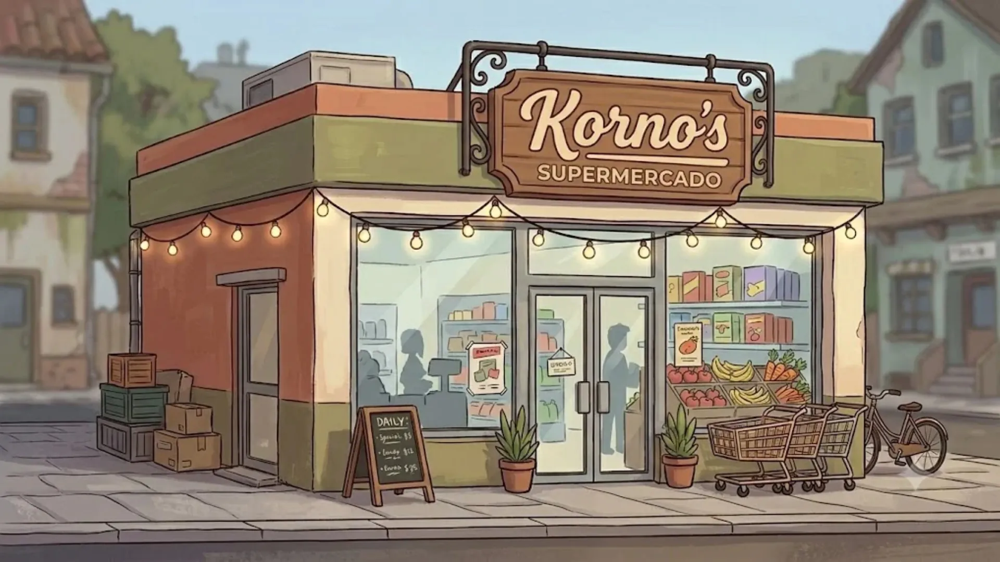
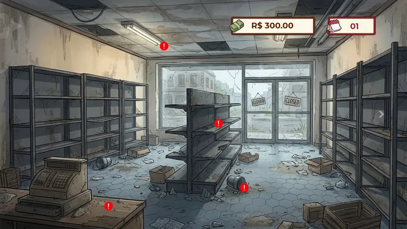
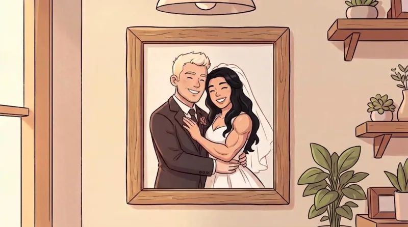

Você herdou um mercado caindo aos pedaços? Agora é fazer as contas.
O Belo ficou sem esposa, sem casa e sem um tostão. Aí o avô deixou um mercadinho de herança. Ajude o cara a reerguer o Korno's em cinco dias, um problema de matemática por vez.




O Luís explica o jogo
E aí! Eu sou o Luís, vou te acompanhar no Korno's. Cada dia tem um problema de verdade de mercado: montar a compra, dar o troco, entregar no prazo, vigiar o corredor, arrumar a prateleira.
Acertou a conta, o caixa sobe. Errou, o prejuízo é do Belo. Sem pressão. Quer saber como ele veio parar aqui?
Por onde você quer começar?
Ofertas da semana
Válidas do Dia 1 ao Dia 5 · uma conta por dia
Cola Refri e Guaraná Primavera não podem ficar lado a lado.
C = Cola Refri · G = Guaraná Primavera
Seis produtos, seis lugares na prateleira. De quantos jeitos dá para arrumar sem as duas marcas se encostarem? Arraste as latas e descubra, ou deixe o computador testar todos.
6! − 2·5! = 480
ConteúdoAnálise combinatória · força bruta × fórmula Dia 1Compra no atacadista
Encher o carrinho sem estourar o orçamento.
OrçamentoR$ 300,00 Dia 2Caixa e troco
Troco com o menor número de notas e preço com margem de lucro.
Margem+30% Dia 3Moto Entrega
Pedido #001, Bairro Jardim: 18 km em 30 minutos. Qual a velocidade mínima?
Velocidade média36km/h Dia 4Câmeras
Nenhum ponto cego no corredor.
Alcance6,93mDepois de cada minigame, o jogo mostra como o computador resolveria o mesmo problema. Ver todos os algoritmos
*Ofertas válidas enquanto durar a paciência do Belo.

A história
“Naquele dia, Belo acreditava ter encontrado o amor da sua vida.”
Spoiler: não tinha. A Grazi foi embora com o Maurício, e o Belo ficou sozinho com o filho, o Enzo. Logo depois, o avô José morreu e deixou de herança um mercadinho velho, sujo e quase falido. Sem dinheiro e sem experiência nenhuma, o Belo arregaça as mangas.
Ver a abertura inteiraQuem passou essa conta
O Korno's é o TCC do Grupo 07 do curso técnico em Desenvolvimento de Sistemas do IFSP. Cinco pessoas, nenhuma com experiência anterior em Godot, um semestre inteiro de cena, sinal e GDScript.
Ver o cupom completo, com o papel de cada um · Como foi feito
KORNO'S SUPERMERCADO
Grupo 07 · IFSP · 2026
ORIENTAÇÃO: JOÃO TEMOCHKO E FELIPE MARCOS PINTO
NÃO É DOCUMENTO FISCAL
Obrigado pela preferência!